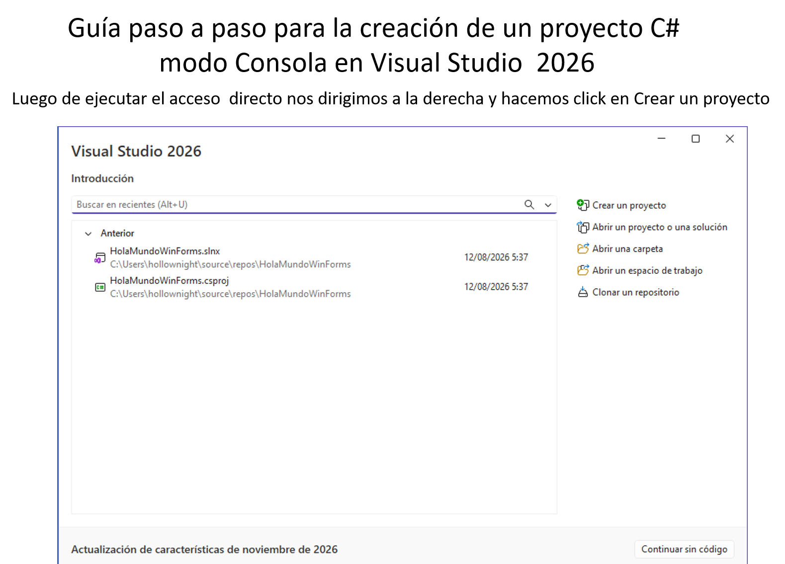
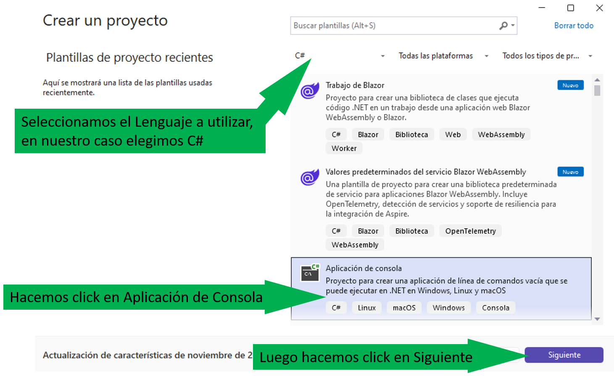
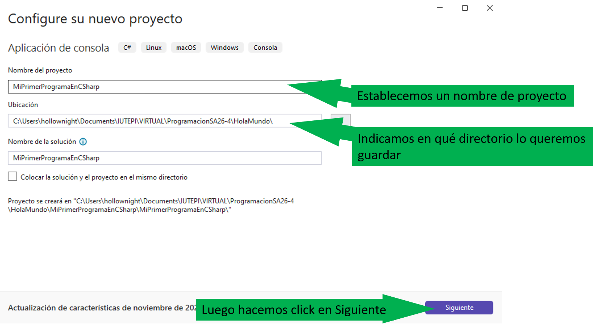
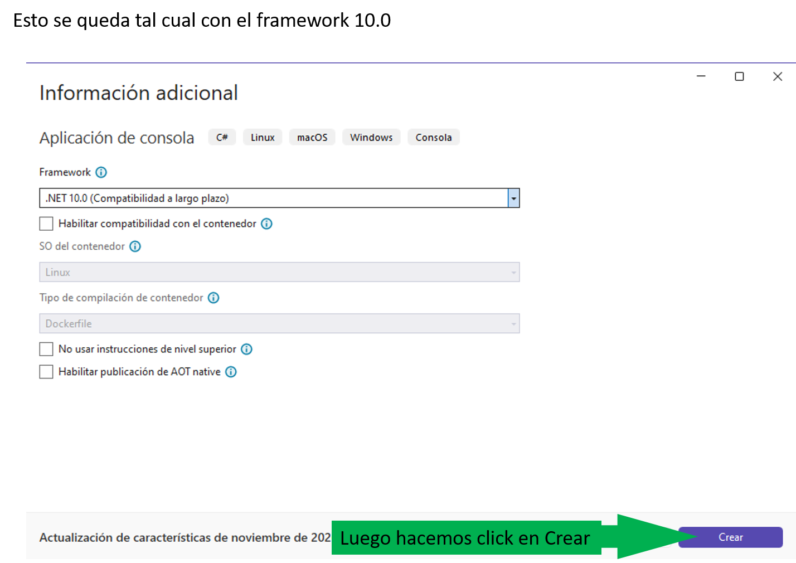
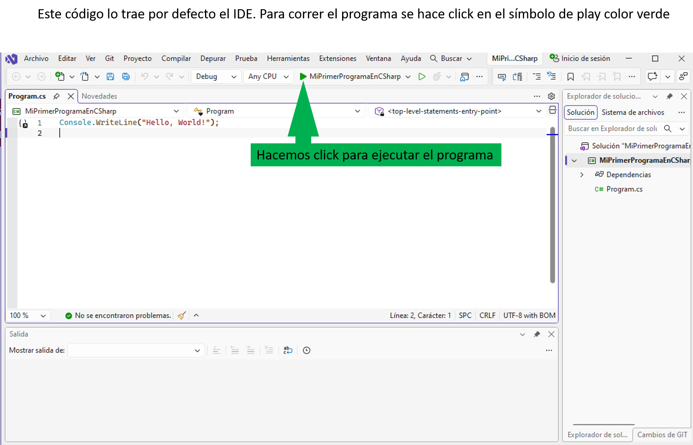
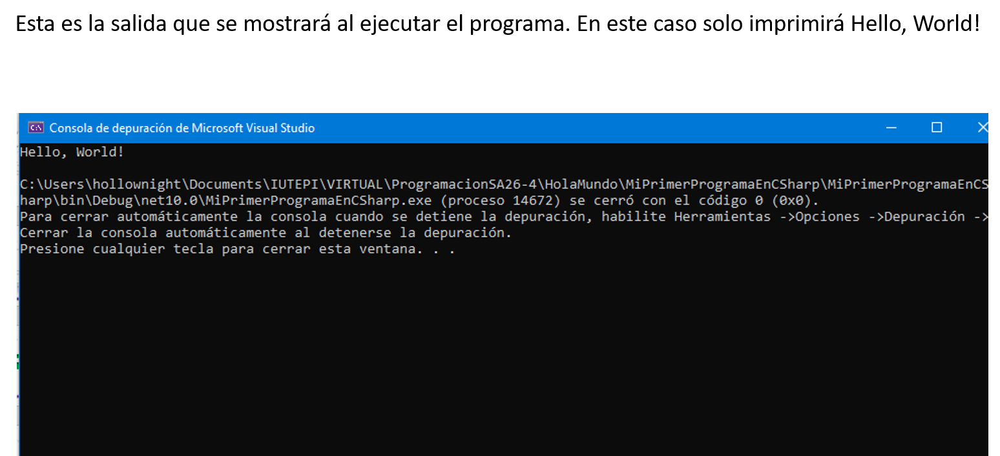
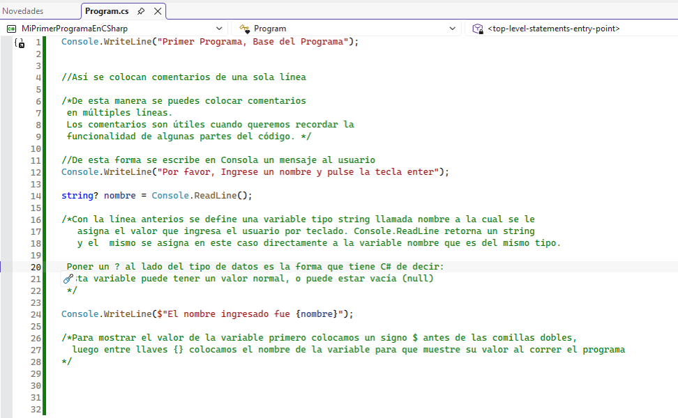

Luego de ejecutar el acceso directo, nos dirigimos a la derecha y hacemos clic en Crear un proyecto.

Seleccionamos el lenguaje a utilizar, en nuestro caso elegimos C#. Hacemos clic en Aplicación de Consola y luego en Siguiente.

Establecemos un nombre de proyecto (ej. MiPrimerProgramaEnCSharp), indicamos en qué
directorio lo queremos guardar y hacemos clic en Siguiente.

Esto se queda tal cual con el framework configurado (por ejemplo, .NET 10.0). Luego hacemos clic en Crear.

Este código lo trae por defecto el IDE:
Console.WriteLine("Hello, World!");Para correr el programa se hace clic en el símbolo de play color verde.

Esta es la salida que se mostrará al ejecutar el programa. En este caso solo imprimirá
Hello, World!.

Podemos extender el código base para incorporar comentarios, lectura de datos por teclado y uso de variables con interpolación de cadenas:

Console.WriteLine("Primer Programa, Base del Programa");
// Así se colocan comentarios de una sola línea
/* De esta manera se pueden colocar comentarios en múltiples líneas.
Los comentarios son útiles cuando queremos recordar la funcionalidad de algunas partes del código. */
// De esta forma se escribe en Consola un mensaje al usuario
Console.WriteLine("Por favor, Ingrese un nombre y pulse la tecla enter");
string? nombre = Console.ReadLine();
/* Con la línea anterior se define una variable tipo string llamada nombre
a la cual se le asigna el valor que ingresa el usuario por teclado. */
Console.WriteLine($"El nombre ingresado fue {nombre}");
/* Para mostrar el valor de la variable primero colocamos un signo $ antes de las comillas dobles,
luego entre llaves {} colocamos el nombre de la variable para que muestre su valor al correr el programa */